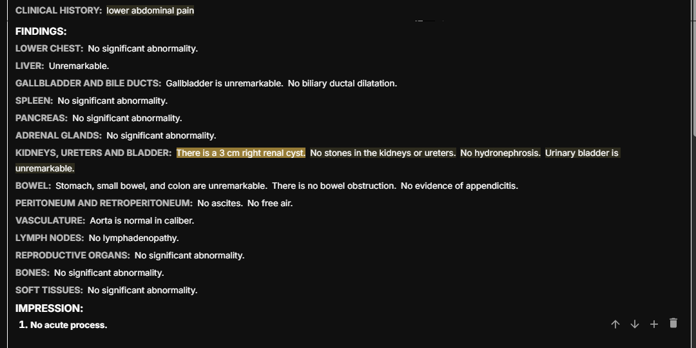
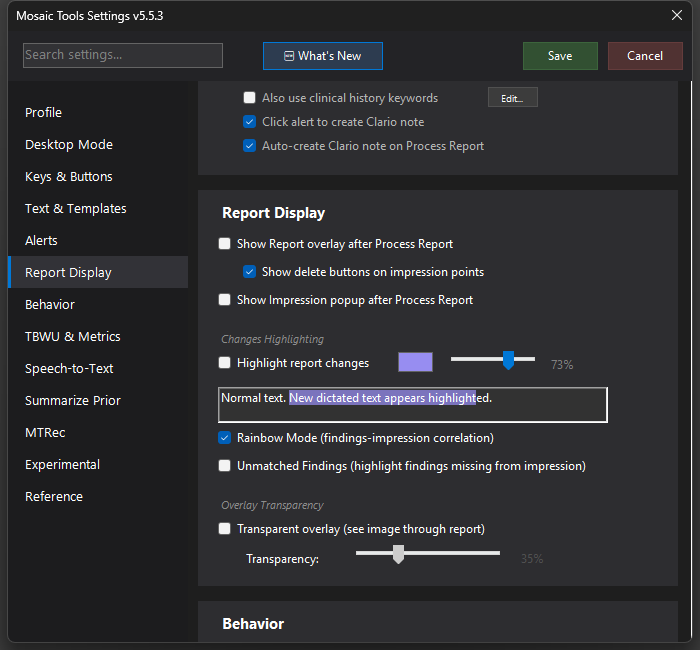

Rainbow Mode
Colors each impression point and its matching findings sentences the same color, so you can see at a glance that everything important made it into the impression.


What it does
Rainbow Mode correlates your FINDINGS and IMPRESSION sections and color-codes the matches: impression point 1 and the findings sentences that support it get one color, point 2 and its findings another, and so on (colors are stable per body-part category, so the liver is always the same hue). One glance tells you whether every significant finding is represented in the impression — and which impression points have no visible support.
It works in two places:
- The report popup — click the popup to cycle into Rainbow mode (see the Report Popup page).
- Live in the Mosaic report editor — with CDP enabled, three small buttons (No Highlight / Regular / Rainbow) can sit at the bottom-right of the report editor. Pick Rainbow and the Final Report itself is colored, updating with a ~2-second debounce as you edit. As of 5.5.15 these buttons are off by default — turn them on with Show highlight buttons in report (Settings → Report Display); the option applies to both Mosaic and MosaicC.
How to turn it on / set it up
Settings → Report Display → check Rainbow Mode (findings-impression correlation) for the popup. The in-editor buttons require Use CDP for Mosaic interaction (Settings → Experimental) and, since 5.5.15, Show highlight buttons in report (Settings → Report Display, off by default).
Using it
After Process Report, scan the colors: matched pairs share a hue; anything uncolored in FINDINGS didn't correlate to an impression point. As of 5.5.1, any mention of the appendix or uterus is always highlighted — those structures are never in the default CT abdomen/pelvis templates, so any comment about them (even "normal appendix") is new information worth a look. The template's boilerplate "No evidence of appendicitis" is intentionally not affected.
Tips & gotchas
- Since 5.5.1 your chosen highlight mode (None / Regular / Rainbow) persists across restarts and study changes — it no longer resets to Regular each launch.
- Rainbow is a heuristic term-matcher, not an AI read — use it as a coverage check, not a guarantee.